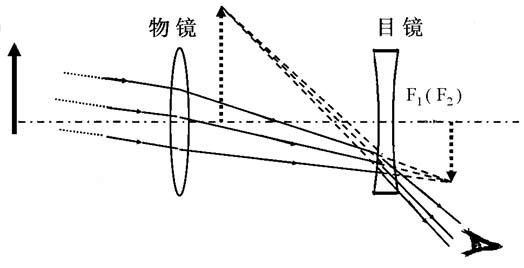
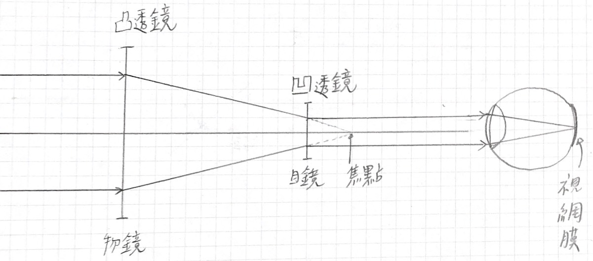

了解望遠鏡的原理，思考如何自製望遠鏡並實作，進一步探討不同焦距對 望遠鏡的影響。
平行光通過凸透鏡會在凹透鏡後呈現倒立縮小實像，對於凹透鏡而言 為虛物，因此在凹透鏡前呈現放大正立虛像。
因為平行主軸的光射入凸透鏡會匯聚於焦點上，所以利用遠方的物 體，經過凸透鏡成像於白色屏幕上，當在屏幕上成清晰的像時，透鏡 與屏幕間的距離即為凸透鏡的焦距。
因為要使打入眼睛的光為平行光，這樣才能在視網膜上有清楚的成 像，因此凹透鏡與凸透鏡的焦點需位於同個位子，這樣平行光打入凸 透鏡後，也會同時匯聚於凹透鏡的焦點上，即可射出平行光。
| 第一組 | ||
|---|---|---|
| 凸透鏡 | 凹透鏡 | |
| 透鏡直徑 | 5cm | 3cm |
| 實際焦距 | 29.5cm | -7.5cm |
| 理論放大倍率 | 3.9 | |
| 實際放大倍率 | 3cm | |
| 透鏡間的距離 | 22cm | |
| 第二組 | ||
|---|---|---|
| 凸透鏡 | 凹透鏡 | |
| 透鏡直徑 | 5cm | 3cm |
| 實際焦距 | 44cm | -7.5cm |
| 理論放大倍率 | 5.8 | |
| 實際放大倍率 | 4cm | |
| 透鏡間的距離 | 36.5cm | |
這是我高二下的自主學習
使用HTML寫的第一份表單
PS.尚未學習後端知識，所以沒有伺服器接受表單回應。